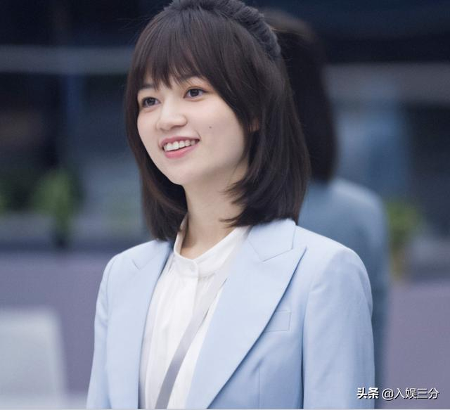
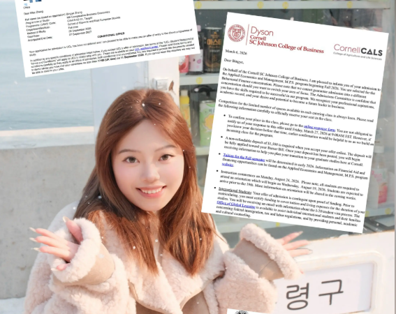
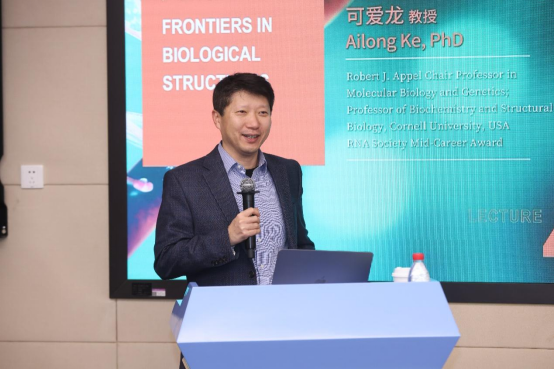
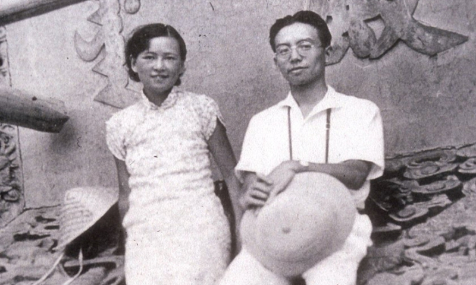
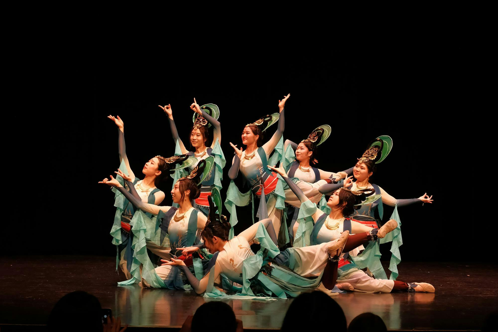
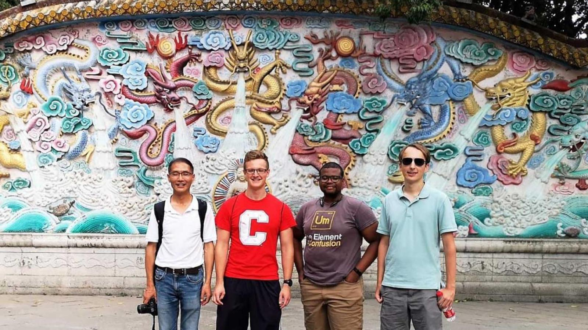
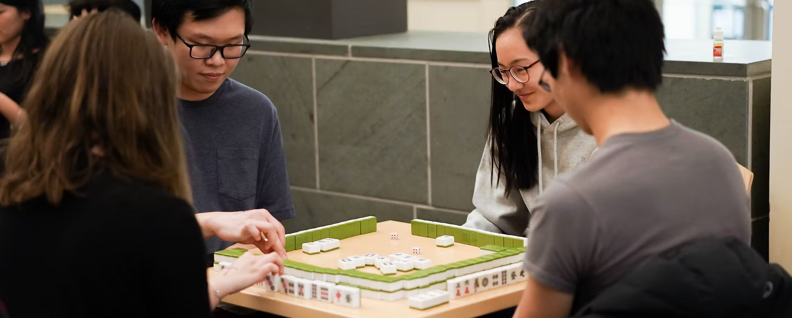
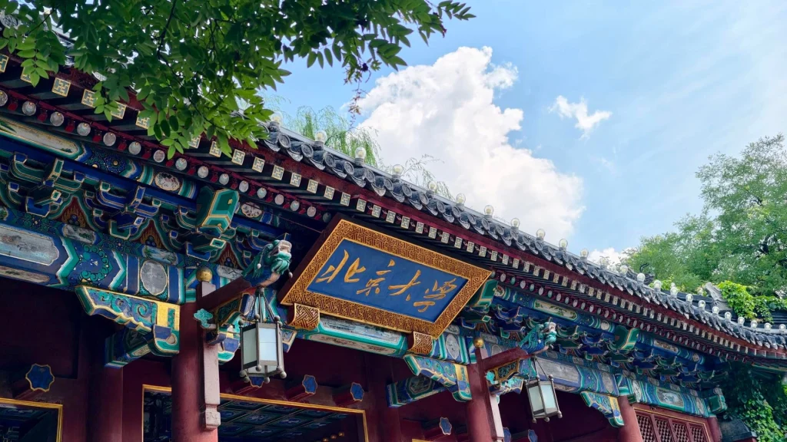

AMST 2001 — Final Project · Cornell University
Why Is Cornell So Famous in China?
A history of Cornell's relationship with China — its institutional ties, its alumni, and how it appears in Chinese media and culture.
Introduction
A question that starts at home
When I was back home in Seattle over winter break for my yearly checkup, I got the standard small-talk question of where I go to school. When I said "Cornell," the doctor immediately responded with "Oh, that's the one in California, right?" This was actually one of several instances of people back home not knowing what Cornell was.
Growing up on the west coast, the Ivy League was much more distant both in geography and in cultural awareness than many might imagine. In fact, I didn't even know most of the Ivy League schools before moving to Ithaca. I did, however, always know Cornell. Yes, mostly because my parents attended Cornell for grad school, but also because Cornell is widely recognized in China as a prestigious institution.
I've always found it striking that Cornell's reputation in China and amongst my extended Chinese family often times exceeded that of my peers growing up on the west coast. Among Chinese students and families, Cornell carries a prestige and cultural recognition that goes beyond rankings. This project asks: why?
To answer that question, this site explores three threads: the historical relationship between Cornell and China, Cornell's representation in Chinese media and popular culture, and a firsthand account from a Cornell alumn who made the journey from China to Ithaca.
Historical Ties
Cornell and China: a timeline
Since the late 19th century, Cornell and China have been linked by more than a century of academic exchange. Chinese scholars came to Ithaca while Cornell faculty and alumni worked in China. Across different eras, through education, research, and community engagement, these connections have shaped learning and understanding on both sides.

1879
Chinese language comes to Cornell
Cornell's first Chinese-language course draws nearly 10% of the university's 463 students — a remarkable sign of interest from the very beginning.
1901
Alfred S. Sze graduates
The first Chinese student to graduate from Cornell, Sze went on to become China's first ambassador to the United States in 1935.

1901
Willard Straight graduates
Straight becomes an active American diplomat to China in the 1900s, one of many Cornellians shaping U.S.-China relations early on.

1905
S.C. Thomas Sze graduates
Alfred's younger brother Tommy became a major force in building China's railroad system — another Cornellian leaving a lasting mark on modern China.

1906
First Chinese government delegation visits
Cornell receives the first official Chinese government delegation to visit the Ithaca campus. That same year, trustees authorize six annual scholarships for Chinese students.
1908
Boxer Indemnity scholarships
Cornell applies Boxer Indemnity funds to expand scholarships for Chinese students, opening the door for a growing wave of students from China.
1914
Hu Shih graduates
Hu Shih goes on to become one of China's most influential intellectuals, driving social and educational reform back home — a testament to what a Cornell education could set in motion.

1915
China Science Society founded at Cornell
Chinese students at Cornell establish the China Science Society, which relocates to China in 1918 — carrying Cornell's intellectual influence directly back across the Pacific.

1918
The Wason Collection arrives
Charles W. Wason (BS 1876) donates his extraordinary collection on East Asia to Cornell University Library, laying the groundwork for serious China scholarship at Cornell.

1924
Cornell-Nanking Crop Improvement project
Cornell partners with the University of Nanking to train Chinese plant breeders and boost crop yields by 10–20% — Cornell's first major international cooperation effort.
1944
Department of Chinese Studies founded
Cornell creates a dedicated Department of Chinese Studies, today known as the Department of Asian Studies.
1950
China Program established
Cornell formalizes China-focused scholarship with a dedicated China Program, today known as the East Asia Program.
1972
Full-Year Asian Language Concentration
Cornell launches a program "FALCON" that lets students immerse themselves in Mandarin (or Japanese) all day, every day for an entire year — one of the most intensive language programs in the country.

1979
First in line when China reopens
When China reopens to the West, Cornell is among the very first universities to sign cooperative agreements for education and research — decades of relationship-building paying off.
2001
The Sze legacy continues
Tommy Sze's son Yao Yuan Sze endows the directorship of Cornell's Sibley School of Mechanical and Aerospace Engineering in his father's honor — three generations of a family tied to Cornell.
2016
Cornell China Center launched
Cornell formalizes its China work under a dedicated China Center, integrating research, education, and outreach into a single coordinated initiative.

Cornell & China Today
Cornell in China, China at Cornell
The history between Cornell and China is long, but it's not just history. Walk across the campus today and at times you'll probably hear Mandarin almost as often as English. This section turns the lens to the present. It looks at two sides of the same story: first, how China sees Cornell — goal and cultural reference point. And second, how Cornell sees China — through the thousands of Chinese students, scholars, and alumni who now shape the university from within.
Cornell in China
There are so many instances of Cornell in Chinese media and popular culture today but here we'll explore 4 of them:

Reality TV
Zhao Nanxi on An Exciting Offer (令人心动的offer)
Before Cornell, Zhao Nanxi felt lost. She watched her classmates post photos of new schools, study abroad adventures, and top job offers—while she stood still. Unsure of where to go, she took a gap year, and in March 2023, she officially accepted Cornell Law School's offer. "At that moment, I felt that this year's waiting and hard work were worth it."
She later became a contestant on An Exciting Offer Season 5, China's popular legal reality show, and earned an internship offer from JunHe, one of China's top "red circle" law firms. What she says about Cornell: "The classroom pays more attention to interaction. Most professors use encouraging education—encouraging expression, encouraging mistakes. Ideas become shinier in exchange and collision."
Zhao's story—gap year struggle and eventual Cornell acceptance, resonates with Chinese students facing intense pressure. She represents a relatable figure who proves that failure isn't the end. And when she credits Cornell's teaching style for her growth, it shapes how millions of young Chinese viewers imagine an Ivy League education.

Social Media
Admitted students share their joy
Chinese social media is filled with raw, personal admissions reactions:
1. on TikTok:
One student posted: "26fall flower scattering ends. End my application season with the arrival
of Cornell! Thank you for not letting my tears flow in vain.
2. Viral "double-non" story
A student from a "double-non" university (non-985, non-211) wrote a viral post titled: "Who said
double-non can't counterattack? My Cornell application history of blood and tears." She describes
clicking the email: "I didn't even dare to breathe. The first sentence made my eyes wet:
'Congratulations!' Her advice to others: "Origin doesn't determine
everything. If you have a dream school, chase it. The future is promising, and your Cornell offer may be
on the way!"
3. From "Quanjude" (full rejection) to Cornell
One student was rejected everywhere during application season, a situation Chinese students call
"Quanjude" (Peking duck, a pun on "rejected by all"). He ended up at Northeastern University, then
transferred to Cornell: "I'm truly here — at my dream school." His takeaway: high school had made
him a "soulless puppet" chasing credentials. At Cornell, he finally learned to live for himself.

Viral Moment
Ailong Ke (可爱龙) "The Cute Dragon"
In late 2023, Cornell professor Ke Ailong returned to China for academic lectures on CRISPR-Cas gene editing. He's a highly accomplished scientist—over 50 papers in Nature, Science, and Cell, a tenured professor at Cornell, elected AAAS Fellow in 2024. But students didn't line up for his autograph because of his research. His name, Ke Ailong, literally means "Lovable Dragon" in Mandarin. A Fudan student spotted it on a lecture poster and posted online. Soon, students were attending his talks just to see the "Cute Dragon" sign. Ke was surprised. "The experience of being an internet celebrity isn't very comfortable," he told China Science Daily. But he added, "If more people know me because of my name, and then become interested in our research, that would be good."

Documentary
"Liang Sicheng and Lin Huiyin (梁思成与林徽因)
In 2007, a five-member crew from China Central Television traveled to Ithaca to search Cornell's archives for materials on Liang Sicheng (梁思成) and Lin Huiyin (林徽因), two of modern China's most revered cultural figures. They filmed the campus where the couple left their "youthful footprints" during a summer at Cornell in 1924. Liang took courses in watercolor and trigonometry while Lin studied sketching and algebra. They would go on to become founders of modern Chinese architecture—Liang the "father of modern Chinese architecture," Lin the nation's first female architect.
The result was an eight-part documentary series that aired on CCTV to a national audience. While there, the crew praised Cornell as having a "wonderful library, a beautiful campus, and the most hospitable people."
Cornell's reputation as the "most friendly Ivy League school for Chinese students"
Among China's study-abroad community, Cornell carries a unique label: the most "friendly" Ivy League school for Chinese applicants. This isn't just a rumor. Multiple Chinese education platforms cite the same data point — in recent years, Cornell has consistently admitted more Chinese students than any other Ivy. For the Class of 2027, Cornell accepted 68 Chinese students across early and regular rounds, with 49 coming through Early Decision alone.
To put that in perspective: while peer Ivies often admit Chinese applicants in single digits during early rounds, Cornell "generously distributed 57 offers" in one recent application cycle, according to Chinese media.
Cornell's founding motto — "any person, any study" — translates well to the Chinese value of pragmatism. The university offers strong programs in engineering, computer science, hotel management, and agriculture, fields that Chinese families respect for their clear career paths. Its location in upstate New York (not Manhattan or Boston) also means slightly lower costs and a quieter, more study-focused environment.
As of Fall 2024, Chinese students made up 43% of Cornell's international student body — nearly 3,000 students.
No other Ivy comes close to the percentage of Chinese students at Cornell. For Chinese applicants, Cornell feels attainable, not untouchable. Its ED acceptance rate (around 17-18%) is significantly higher than its RD rate (5-6%), and Chinese students have learned to strategize accordingly.
When Chinese parents ask "Which Ivy can my child actually get into?" the answer often starts with Cornell. That perception has made the university a household name, and a dream school, for thousands of Chinese families.
China at Cornell
What does Chinese presence look like on Cornell's campus today?

More than one in ten Cornellians. Chinese students have reshaped campus life in visible, everyday ways. From CSA Lunar New Year galas to Mid-Autumn Festival celebrations, or Student-run performance groups like CEME (Chinese Ensemble of Music East) or the Amber Dance Troupe, students regularly celebrate and showcase traditional and contemporary Chinese arts, drawing diverse audiences eager to experience Chinese culture firsthand
Deep roots and institutional support. Institutional support follows close behind cultural presence. The China and Asia-Pacific Studies (CAPS) program offers a unique undergraduate major combining four years of intensive Mandarin training with semester-long internships in Washington, D.C., and Peking University in Beijing, preparing students for careers in diplomacy, business, and public service


Outside of academics. Student organizations transform campus life. The Chinese Students Association (CSA) was founded in 1904 and is one of Cornell's oldest student groups. The Chinese Students and Scholars Association (CSSA) hosts Lunar New Year galas, Dragon Boat Festival gatherings, karaoke nights, and mentorship "families" for new arrivals. It is organizations like these that give Chinese Cornell students a formal presence on campus.
China isn't just looking at Cornell from afar. China is inside Cornell: shaping its classrooms, its social fabric, and its identity as a global university.
Oral History
Interview: Fei, Cornell '04

Throughout this project, I've traced Cornell's fame in China through history, media, and social media. But some of the most honest answers come from closer to home.
My mother, Fei, grew up in China and attended Peking University for undergraduate studies before coming to Cornell University for graduate school in 1996, earning her PhD in physics in 2004. Her experience bridges both sides of this project's central question — she saw Cornell's reputation from within China before experiencing it firsthand in Ithaca.
Fei knew about Cornell before applying and in fact told me everyone at Peking know about Cornell. When I asked why she chose Cornell over any other school, she told me simply that she had a full scholarship and that Cornell was a leader in space physics.
"Everybody at Peking knew about Cornell. Elite, expensive, great academics."
— Fei, Cornell PhD '04
I grew up hearing my mom talk about how Cornell's campus is one of the most beautiful, and how she loved walking past Ithaca Falls on her walk to Rhodes Hall every day. That image stayed with me long before I ever set foot in Ithaca. During my interview, she also told me that beyond her first impression of Ithaca beyond appreciation of the natural beauty was also suprise at the openness.
"Cornell is much more open. No walls, no guards in front of dorms. At Peking, there were people guarding the doors of every dorm building."
— Fei, Cornell PhD '04
A small detail that captured a larger cultural gap. She found community easily. Chinese students, almost all graduate students back then, cooked together, played cards, and hiked. She told me about her roomate, another international Chinese student, who would drive her to the nearest Chinese grocery store every weekend. Beyond the Chinese community, she rented the basement of a local woman's house for several years, and became quite close with her landlord, frequently making classic Chinese dishes like spicy tofu and sharing them with her.
As for why Cornell became so famous in China? She gave me a practical, grounded answer: overseas study agents know Cornell well, including how to navigate admissions. Wealthy families send their kids there. The reputation feeds on itself.
While I believe Cornell's reputation is a large draw to prospective students both in and out of the US, I know I chose Cornell for a very different reason. Today, when I walk over the gorges on my way to class, I think of my mom doing the same thing twenty-five years ago. When I shop for my Asian groceries, a 5 minute walk from my apartment, I think of her weekly drive to the only Chinese grocery store in Ithaca. I walk through campus and I know I'm here in part because she was here first. Her encouragement, spoken across decades and oceans, also brought me here
Conclusion
So, why Cornell?
So why is Cornell so famous in China? I believe the short answer is because Cornell made an effort.
Other Ivy League schools also have great prestige in China but I believe Cornell's long history of building relationships is what makes it stand out. Cornell recruited Chinese students early, created programs like the China Center and CAPS, and cultivated a reputation as the "friendliest Ivy". It welcomed Chinese scholars when few American universities did and over decades, that effort paid off.
My mother came to Cornell in 1996 because she knew Cornell's reputation in space physics and from a full scholarship that made it possible. That's effort too: the work of professors who funded her, alumni who spoke well of the place, and a university that truly valued international students.
Something that surprised me in this research was how visible that effort remains in recent years. The Chinese Student Association, founded in 1904, is one of Cornell's oldest groups. The East Asia Program has been a national resource center for decades. And on social media, Chinese students themselves become recruiters as they post tearful acceptance videos, writing "how I got in" guides, and turning Cornell into a dream worth chasing.
U.S.-China tensions may cool student flows as policies may shift. I've already met Chinese international students at Cornell who tell me they're unsure about their future here and are planning to go back to China after graduation. It's a shame that political tensions have made so many Chinese students question their future here. But I hope that Cornell will keep living up to its motto: any person, any study. As long as it continues, I believe Cornell will remain a place where Chinese students feel welcomed and supported.
"I would found an institution where any person can find instruction in any study"
— Ezra Cornell, 1868
Sources
Bibliography & acknowledgments
Cornell & Institutional Sources
- 1.Love, Harry H. and Reisner, John H. The Cornell-Nanking Story. Internet-First University Press, 2012. eCommons@Cornell. Link
- 2.Cornell China Center. "Cornell's History of Engagement with China." Global Cornell. Link
- 3.Cornell Chronicle. "EnCAPSulating China: Program prepares Cornell grads to understand Chinese culture, politics." October 2007. Link
- 4.CAPS Program. Cornell University China and Asia-Pacific Studies. caps.cornell.edu
- 5.Chinese Students Association at Cornell. Official website. csacornell.org
- 6.Cornell Daily Sun. "Chinese Student Association Fosters Family Away from Home in Lunar New Year Celebration." February 2024. Link
- 7.Cornell Daily Sun. "Rhythms of China: Illuminations and Amber Dance Troupe's Spring Showcase." March 2026. Link
- 8.Cornell University Library. "Wason Collection Update." November 2007. Via Archive-It. Link
- 9.FALCON Language Program. Facebook photo archive. Link
- 10.Ezra Cornell. Wikiquote. Link
Chinese Media & Study-Abroad Sources
- 11.163.com (NetEase). "Liang Sicheng and Lin Huiyin at Cornell." (Chinese) Link
- 12.163.com (NetEase). "Cornell admissions data for Chinese students." (Chinese) Link
- 13.inf.news. "History of Chinese students at Cornell." (English) Link
- 14.inf.news. "Cornell-China historical ties." (English) Link
- 15.China Science Net (科学网). "Ke Ailong: the 'Cute Dragon' goes viral." January 2024. (Chinese) Link
- 16.Baidu Baike. "可爱龙 (Ke Ailong)." (Chinese) Link
- 17.Topsedu (顶思). "Cornell admissions for Chinese students." (Chinese) Link
- 18.IGO留学. "Cornell admissions data." (Chinese) Link
- 19.XDF Liuxue (新东方留学). "Cornell application guide for Chinese students." (Chinese) Link
- 20.CHISA中国留学网. "Chinese students at Cornell statistics." November 2022. (Chinese) Link
- 21.52hrtt华人头条. "Cornell and Chinese students." (Chinese) Link
- 22.Britannica. "Peking University." Link
- 23.ERIC. "Full-Year Asian Language Concentration (FALCON) program study." Link
Social Media Sources
- 24.Douyin. Student admission reaction post. (Chinese) Link
- 25.LXS.net. "Double-non student Cornell admission story." (Chinese) Link
- 26.Bilibili. "Zhao Nanxi — An Exciting Offer / Cornell Law." (Chinese) Link
Oral History
- 27.Fei. Personal interview conducted by Leane Ying. May 2025.